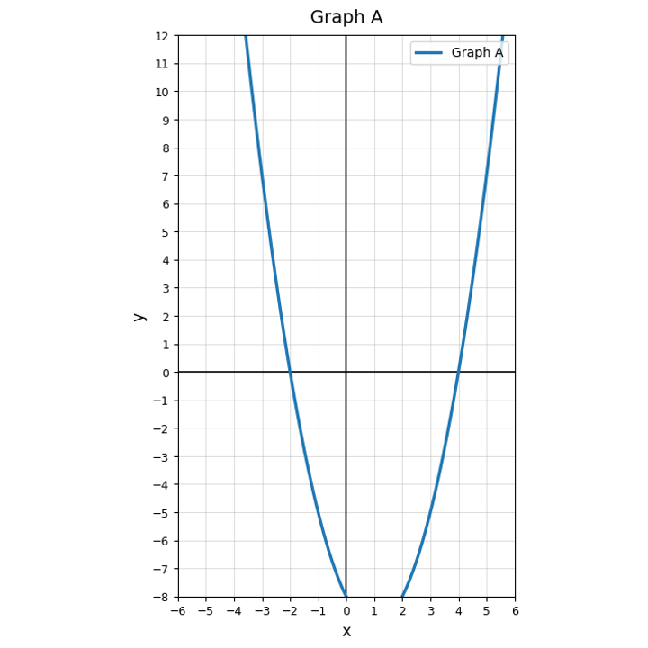

For $y=(x-2)(x+5)$, identify the two factors and predict the two zeros.
Use Graph A. Estimate the $x$-intercepts and describe what they represent for the equation $y=0$.

Complete the table for $y=(x-3)(x+1)$. Then use the table to identify when $y=0$.
| $x$ | -2 | -1 | 0 | 1 | 2 | 3 | 4 |
|---|---|---|---|---|---|---|---|
| $y$ |
Explain why the equation $(x+4)(x-1)=0$ has two solutions. Use the zero-product property in your explanation.
Classify each expression as a difference of squares, a perfect square trinomial, or neither.
Factor completely.
$$x^2-81$$
Which expression shows the pattern $a^2-b^2$?
Multiply $(x+7)(x-7)$ to verify the difference-of-squares pattern.
Factor the perfect square trinomial.
$$x^2-18x+81$$
Determine whether $4x^2+12x+9$ is a perfect square trinomial. Justify your answer.
A student says $x^2+25$ factors as $(x+5)(x-5)$. Analyze the error and correct the reasoning.
Create one difference of squares and one perfect square trinomial. Factor both and explain how someone could recognize the pattern.
Find two integers with product $24$ and sum $10$.
Factor the trinomial.
$$x^2+10x+24$$
Factor completely.
$$2x^2+11x+5$$
A student claims $x^2+8x+15=(x+3)(x+5)$. Verify the claim by multiplying.